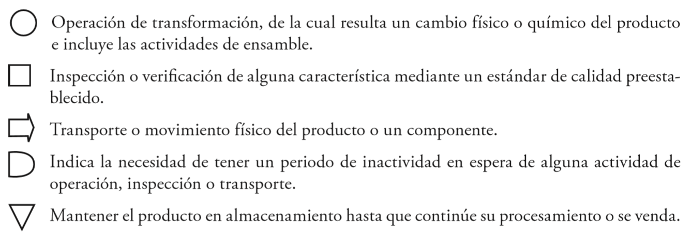

Tarea 3
Administración y mejora de procesos.
Diseño de operaciones: mapeo de procesos
Haga una lectura comprensiva de la obra de Cantú, H (2011). Desarrollo de una cultura de calidad. Capítulo 5. Administración y mejora de procesos. Diseño de operaciones: mapeo de procesos. (p. 152-155) y elabore un informe académico de los mapas de flujo de procesos.
El proceso de producción es la secuencia de operaciones, movimientos e
inspecciones por medio de la cual las materias primas se convierten en producto
terminado listo para enviarlo al siguiente proceso o al cliente. Un recurso para
detallar o mapear el proceso de producción es el diagrama de flujo del proceso
que, mediante simbología estándar, presenta la secuencia de operaciones que se
deberán realizar en el proceso. Existen cinco tipos de actividades, con su
simbología respectiva, que se pueden llevar a cabo, a saber:

De manera tradicional, los procesos se clasifican en cuatro categorías, cada una
de ellas con características muy particulares y apropiadas para elaborar
estructuras de producto y volúmenes de producción muy definidos, a saber:
- Producción unitaria. También llamada de taller, en la que se produce un producto único en cada ocasión, en general ordenado de forma explícita por el cliente y aunque puede repetirse no es lo más frecuente. Algunos ejemplos son la producción de un librero sobre medida para una casa particular, casi todos los tipos de construcción (como edificios y carreteras), la confección de un traje de novia y la fabricación de un automóvil con características especiales, entre otros.
- Flujo en línea desconectado (lotes). En este caso se producen lotes pequeños de un mismo producto o familias de productos. Puede tratarse de lotes ordenados específicamente por un cliente en particular, producidos para tener disponibilidad en caso de una eventual demanda del mercado. Algunos ejemplos son: la producción de partes mecánicas que luego se ensamblarán a un producto, la impresión de un libro, la elaboración de un lote de etiquetas para envase de cerveza o un pedido de latas para refresco.
- Flujo en línea conectado (líneas de ensamble). El producto, claramente diferenciado en unidades, recibe un valor agregado a medida que avanza en las diferentes estaciones de trabajo que conforman el proceso. Algunos ejemplos de este tipo de producción son automóviles, computadoras, televisores, ropa y casi todo producto manufacturado mediante el ensamble de una serie de componentes que se fabrican antes, por lotes y con frecuencia fuera de las instalaciones de ensamble.
- Flujo continuo. El producto también recibe valor agregado conforme avanza en su proceso, pero en este caso se trata de un producto que no se puede diferenciar en unidades (al menos durante el proceso) y es altamente estandarizado. En el flujo continuo se incluyen casi todos los procesos químicos, como elaboración de combustibles, refrescos, cerveza, cemento, etc